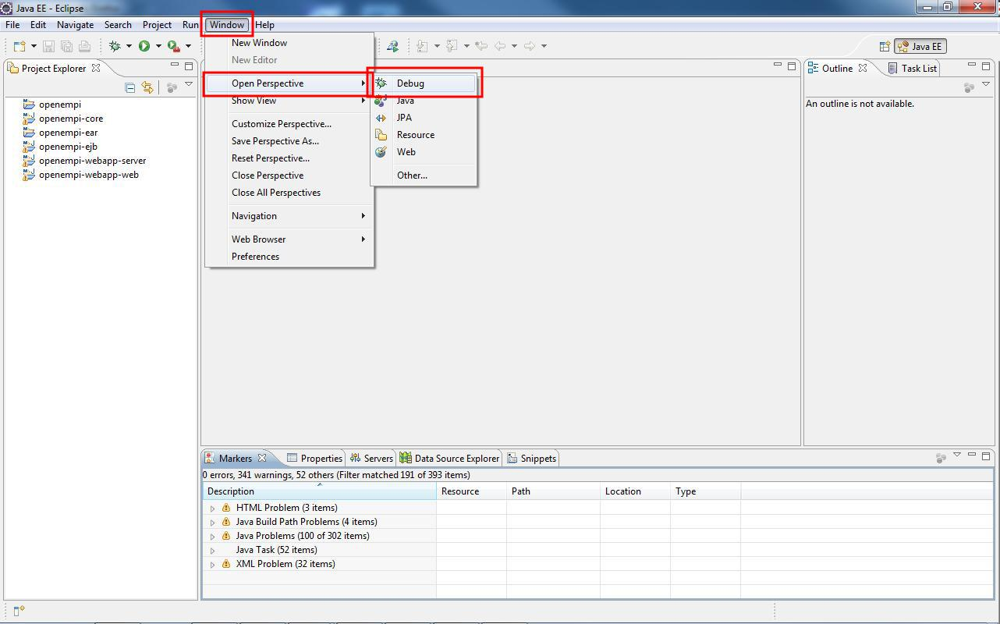
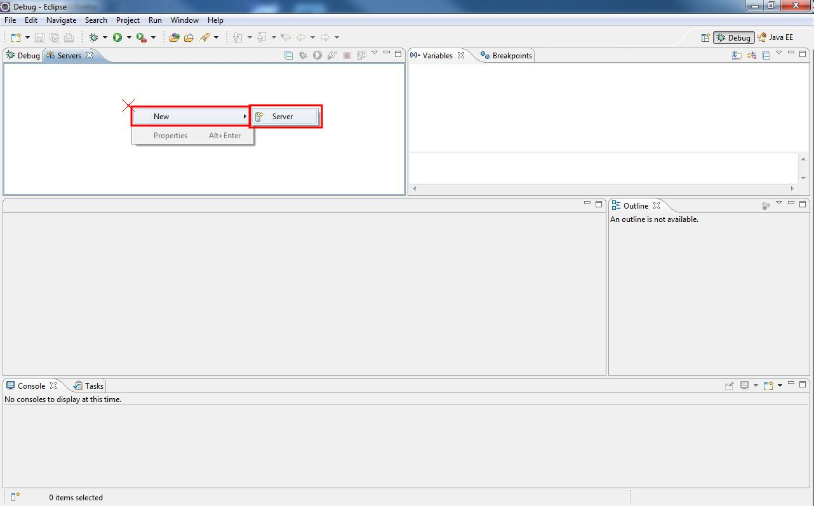
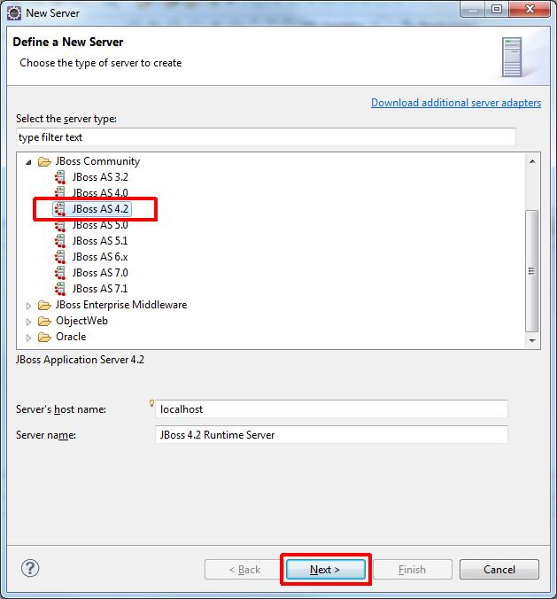
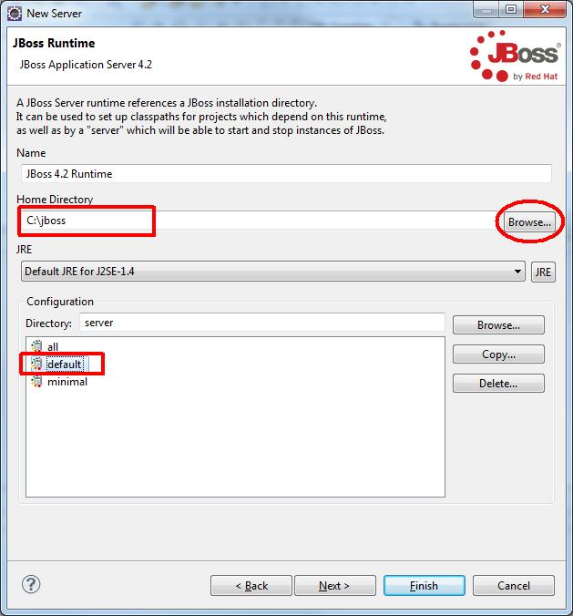
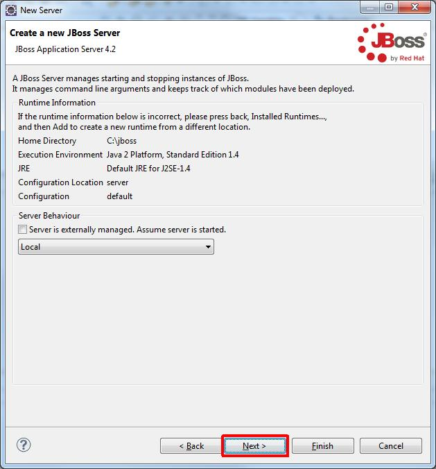
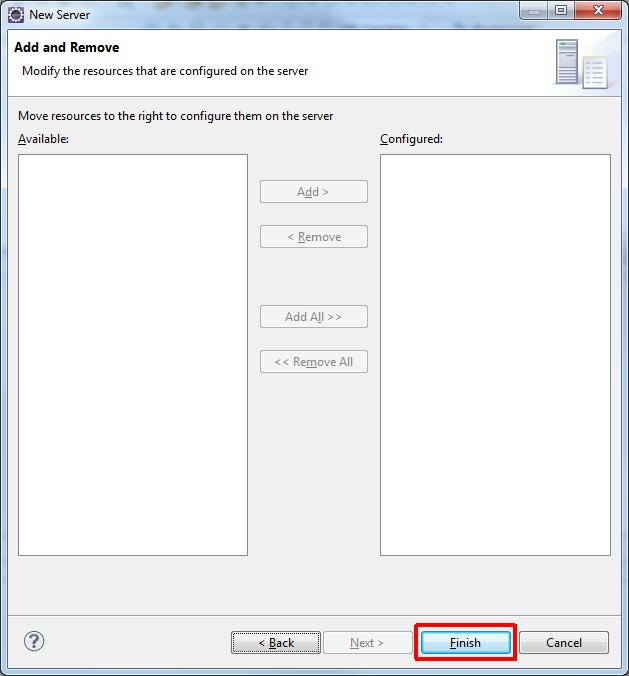
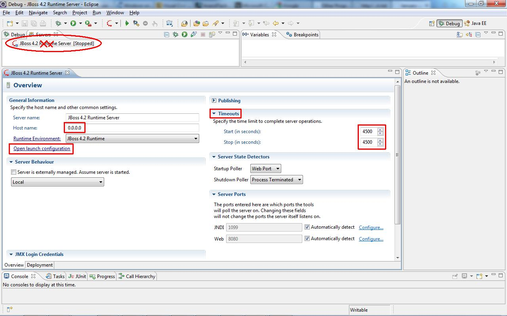
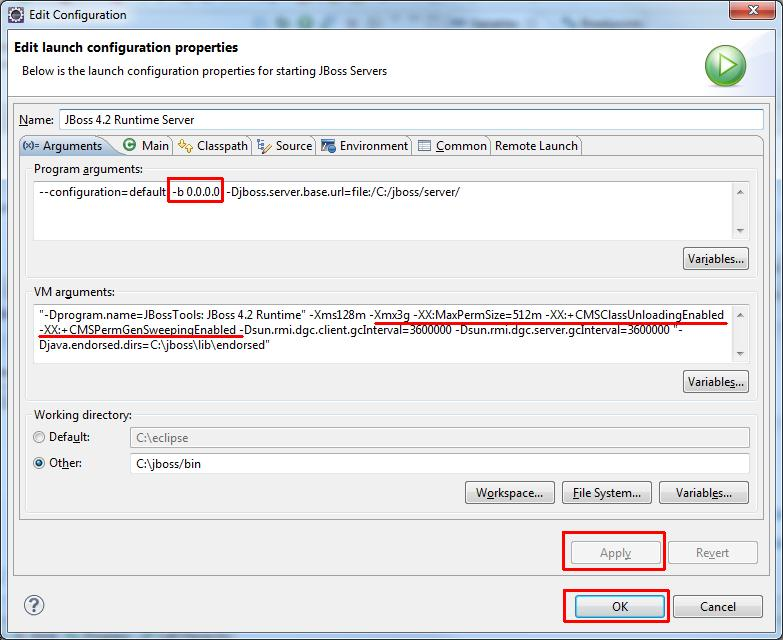

Configuring JBoss Tools in Eclipse
After installing JBoss Tools plugin we can add our JBoss server:
- Window > Open Perspective > Debug.

- Switch to the Server View (from the Debug View) in the Upper left area. Right click,
New > Server.

- Open "JBoss Community" on the server selection tree, select "JBoss v4.2", click "Next".

- Click on "Browse..." button and select your JBoss's root folder.
The JBOSS_HOME should be set already (for setting environment variable see: this).
Note, that JBoss Tools won't automatically find your JBoss installation, you have to browse and point to it!
click "Next".

- Hit "Next".

- I prefer manual deploy, so I won't add the ear to the resources on that dialog, but you can if you wish, hit "Finish".

- Double click on the created Server, the configuration view will open up:
We will perform two configurations: timeout values and we specify the binding address at the launch config too.
First open the "Timeouts" section (to the right under the "Publishing") and prepend two 0s after the Start and the Stop timeouts
Then click on the "Open launch configuration" link.

Modify Address to 0.0.0.0 or actual IP if you want to perform multi-party experiments
(if you leave 127.0.0.1 there the server will bind to that address and won't be visible
from outside. 0.0.0.0 should bind it to anything, but sometimes that doesn't work either and you have
to stick it to the real IP.).
- Switch to the "Arguments" tab. Specify "-b 0.0.0.0" or the IP address at the "Program arguments:"
edit if needed, after the "-c default ". Click "Apply" and then "OK". TODO: what about VM arguments?

- Hit Ctrl+S on the view with the configuration so you'll save it (the "*" will disappear
from the tab title).